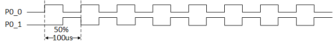
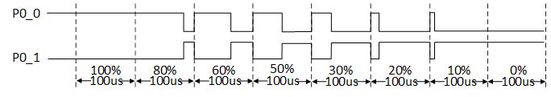
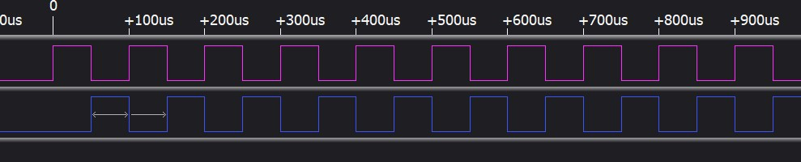
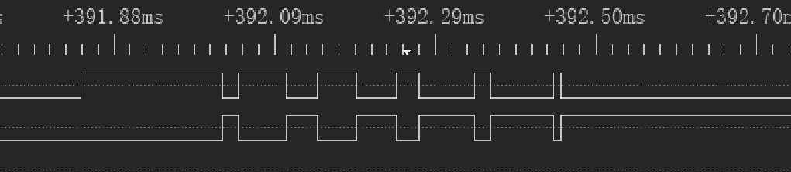
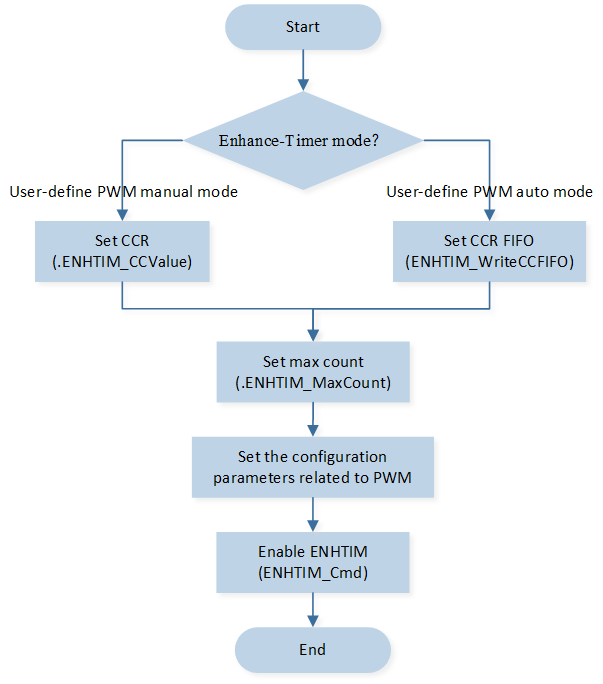

PWM
This example achieves outputting a PWM waveform by using ENHTIM.
Description |
Output Waveform |
Configuration Option Macro Definition |
PWM waveform with a period of 100us and a 50% duty cycle |
 |
|
PWM waveform with a period of 100us and duty cycles of 100% 80% 60% 50% 30% 20% 10% 0% |
 |
|
Connect P0_0 (PWM_P) and P0_1 (PWM_N) to the logic analyzer, where you can observe the output waveform of the PWM.
Requirements
For requirements, please refer to the Requirements.
Wiring
Connect P0_0 (PWM_P) and P0_1 (PWM_N) to a logic analyzer.
Configurations
The following macro can be configured to modify the output PWM wave pin.
#define PWM_OUT_P_PIN P0_0 #define PWM_OUT_N_PIN P0_1
You can configure the following macros to modify the frequency and duty cycle of the PWM.
#define PWM_PERIOD 100 /*< Setting this macro to 100 means the output is a PWM wave with a period of 100us. The unit of this macro is microseconds (us). */ #define PWM_DUTY_CYCLE 50 /*< Setting this macro to 50 means the output is a PWM wave with a 50% duty cycle. */ #define PWM_MAXCNT (PWM_PERIOD * 40) #define PWM_CCVALUE (((PWM_PERIOD)*(PWM_DUTY_CYCLE*40))/100)
The following macros can be configured to select whether a waveform with continuously varying duty cycle can be output.
#define ENHTIM_PWM_MANUAL_MODE 1 /*< Setting this macro to 1 means that a PWM waveform with a period of 100us and a duty cycle of 50% can be output. */ #define ENHTIM_PWM_AUTO_MODE 0 /*< Setting this macro to 1 means that a waveform with a period of 100us and continuously varying duty cycle can be output. */
Building and Downloading
For building and downloading, please refer to the Building and Downloading.
Experimental Verification
After the EVB starts, you can observe the PWM waveform using a logic analyzer on the P0_0 and P0_1 pins.
a. If the configuring macro
ENHTIM_PWM_MANUAL_MODEis set to1, the P0_0 output will be a PWM waveform with a period of 100us and a 50% duty cycle. The P0_1 output will be an inverted PWM waveform with the same period and duty cycle as P0_0.
PWM Output Waveform in Manual Mode
b. If the configuring macro
ENHTIM_PWM_AUTO_MODEis set to1, P0_0 outputs a PWM waveform with a period of 100us and duty cycles of 100%, 80%, 60%, 50%, 30%, 20%, 10%, 0%. Subsequently, the output PWM waveform will maintain the duty cycle set during the last configuration. The P0_1 output will be an inverted PWM wave with the same period and duty cycle as P0_0.
PWM Output Waveform in Auto Mode
{kind=link}
{kind=link}
Code Overview
This section mainly introduces the code and process description for initialization and corresponding function implementation in the example.
Source Code Directory
The directory for project file and source code are as follows:
Project directory:
sdk\samples\peripheral\enhtimer\enhtim_pwm\projSource code directory:
sdk\samples\peripheral\enhtimer\enhtim_pwm\src
Initialization
The initialization flow for peripherals can refer to Initialization Flow in General Introduction.
Call
Pad_Config()andPinmux_Config()to configure the PAD and PINMUX of the corresponding pins.void board_enhance_pwm_init(void) { Pad_Config(PWM_OUT_P_PIN, PAD_PINMUX_MODE, PAD_IS_PWRON, PAD_PULL_NONE, PAD_OUT_ENABLE, PAD_OUT_HIGH); Pad_Config(PWM_OUT_N_PIN, PAD_PINMUX_MODE, PAD_IS_PWRON, PAD_PULL_NONE, PAD_OUT_ENABLE, PAD_OUT_HIGH); Pinmux_Config(PWM_OUT_P_PIN, PWM_PINMUX_OUT_P); Pinmux_Config(PWM_OUT_N_PIN, PWM_PINMUX_OUT_N); }
Call
RCC_PeriphClockCmd()to enable the ENHTIM clock.Initialize the ENHTIM peripheral:
Define the
ENHTIM_InitTypeDeftypeENHTIM_InitStruct, and callENHTIM_StructInit()to pre-fillENHTIM_InitStructwith default values.Modify the
ENHTIM_InitStructparameters according to the requirements. When selecting different ENHTIM Modes, the initialization configuration parameters vary. The initialization parameter configuration for ENHTIM is shown in the table below. CallENHTIM_Init()to initialize the ENHTIM peripheral.
ENHTIM Hardware Parameters |
Setting in the |
ENHTIM manual mode |
ENHTIM auto mode |
|---|---|---|---|
Counter mode |
|||
PWM mode |
|||
Toggle output polarity |
|||
Count value |
|
|
|
Capture/Compare value |
|
- |
|
PWM deadzone clock source |
|||
PWM deadzone function |
|||
PWM P stop state |
|||
PWM N stop state |
|||
Size of deadzone time |
0x0 |
0x0 |
If the macro
ENHTIM_PWM_AUTO_MODEis set to1, callENHTIM_WriteCCFIFO()to pre-fill the duty cycle of the output waveform.Call
ENHTIM_Cmd()to enable the ENHTIM peripheral, and the PWM output waveform can be observed within the logic analyzer.
Functional Implementation
The process for ENHTIM to output PWM in manual mode and auto mode is shown in the figure:
{kind=link}

ENHTIM PWM Output flow in Different Modes
In
ENHTIM_MODE_PWM_MANUALmode, it is necessary to setENHTIM_InitTypeDef::ENHTIM_CCValueto modify the duty cycle of the output PWM.In
ENHTIM_MODE_PWM_AUTOmode, it is necessary to callENHTIM_WriteCCFIFO()to modify the duty cycle value of the output PWM.ENHTIM_WriteCCFIFO(Enhance_Timer, 0); //Output high level with a duty cycle of 100% ENHTIM_WriteCCFIFO(Enhance_Timer, 800); //Output high level with a duty cycle of 80% ENHTIM_WriteCCFIFO(Enhance_Timer, 1600); //Output high level with a duty cycle of 60% ENHTIM_WriteCCFIFO(Enhance_Timer, 2000); //Output high level with a duty cycle of 50% ENHTIM_WriteCCFIFO(Enhance_Timer, 2800); //Output high level with a duty cycle of 30% ENHTIM_WriteCCFIFO(Enhance_Timer, 3200); //Output high level with a duty cycle of 20% ENHTIM_WriteCCFIFO(Enhance_Timer, 3600); //Output high level with a duty cycle of 10% ENHTIM_WriteCCFIFO(Enhance_Timer, 4000); //Output low level with a duty cycle of 100%
Sequentially pre-fill data into the CCR FIFO, representing duty cycles of 100%, 80%, 60%, 50%, 30%, 20%, 10%, and 0%.
If the CCR FIFO is not cleared and new values are written into it, the subsequent output PWM waveform will maintain the last set duty cycle.
See Also
Please refer to the relevant API Reference: